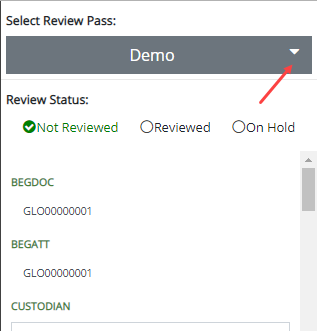

A different review pass/batch may be selected for the currently selected case without having to return to the Review home page. Review pass/batch access is determined by permissions set by your administrator.
Click the drop-down review pass menu as shown in the following figure and select the desired review pass. Review passes are sorted alphabetically.

The related document set, coding form/tag palette, and relationship menus load for the selected review pass/batch.
The previous batch is checked out and available to other users if the default batch checkout time of 30 minutes expired and the batch is not completed. If the batch checkout time did not expire, the batch is still available, and work can continue on that batch.
Related Topics